Cross-correlation demo
Estimate distance between two microphones using cross-correlation of left and right channels of a stereo audio recording. The recorded sterio audio is a shshshsh, aaaaaahh, or a whistle.
DSP Lab - Ivan Selesnick.
Contents
Load data
clear % AAAAAAAAHH [x, fs] = audioread('stereo_aahh.wav'); t0 = 2.2; xlim1 = [0.07 0.085]; % SHSHSHSH % [x, fs] = audioread('stereo_shsh.wav'); % t0 = 2.5; % xlim1 = [0.075 0.08]; % WHISTLE % [x, fs] = audioread('stereo_whistle.wav'); % t0 = 3.0; % xlim1 = [0.07 0.085]; fs % Sampling rate (samples/second)
fs =
48000
Listen to audio
soundsc(x, fs);
Display audio signal
N = length(x); n = 1:N; t = n/fs; x1 = x(:, 1); % Channel 1 x2 = x(:, 2); % Channel 2 figure(1) clf plot(t, x1, t, x2) title('Audio signal') legend('x1(t)', 'x2(t)') xlabel('Time (seconds)') zoom xon

Extract one segment
from both channels
T = 0.2; % Duration of segment (seconds) % t0 = 3.0; % Start-time of segment M = round( T * fs ); m = 1:M; v1 = x1(round(t0*fs) + m); v2 = x2(round(t0*fs) + m); figure(1) clf plot(m/fs, v1, m/fs, v2) title('Audio signal segment') xlabel('Time (seconds)') legend('x1(t)', 'x2(t)') zoom xon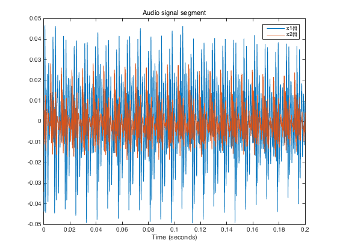
% Zoom view
xlim(xlim1)
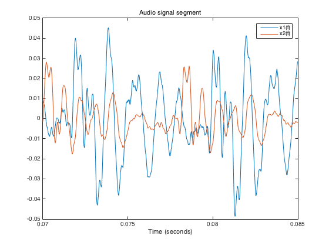 Auto-correlation
flip = @(x) x(end:-1:1); r11 = conv(v1, flip(v1)); figure(1) clf plot(1-M:M-1, r11) title('Auto-correlation of one channel') xlabel('Lag (samples)') zoom xon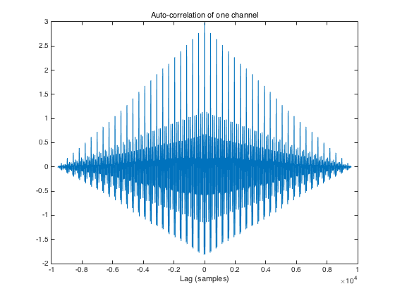
% Zoom view xlim([-600 600]) % xlim([-200 200])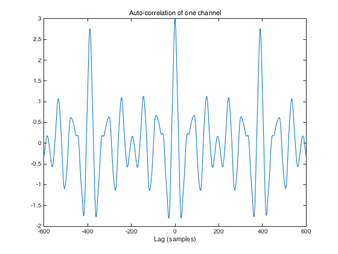
[r11_max, k] = max(r11); lag_max = k - M hold on plot(lag_max, r11_max, 'ro') grid on
lag_max =
0
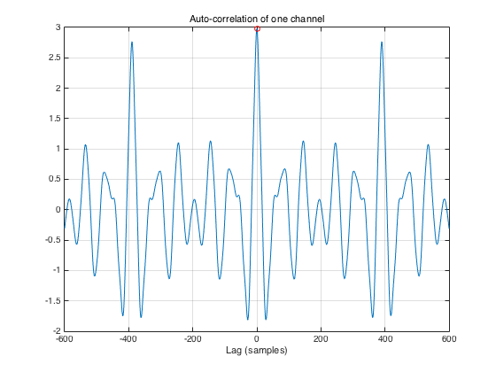 Cross-correlation
r12 = conv(v1, flip(v2)); % The Matlab function xcorr can also be used here. % r12 = xcorr(v1, v2); figure(1) clf plot(1-M:M-1, r12) title('Cross-correlation between left and right channels') xlabel('Lag (samples)') zoom xon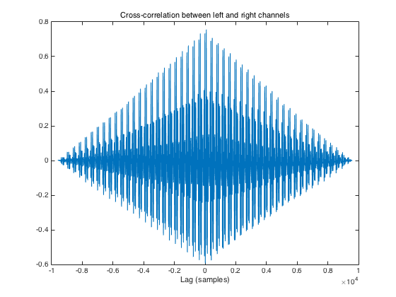
% Zoom view
xlim([-600 600])
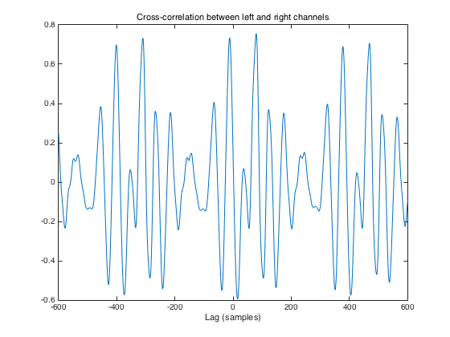 Estimate delay (in samples)
as peak cross-correlation
[r12_max, k] = max(r12); % r12_max : Peak cross-correlation lag_max = k - M % lag_max : Lag at which cross-correlation peaks hold on plot(lag_max, r12_max, 'ro') grid on
lag_max =
80
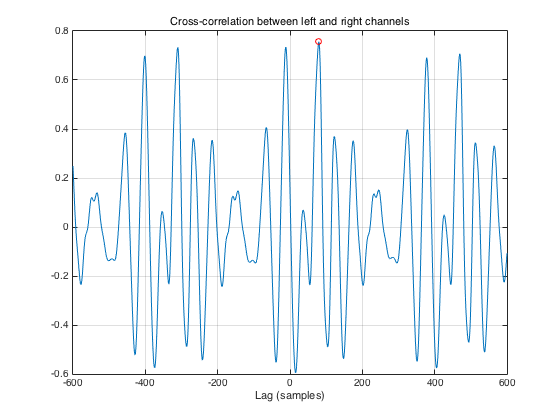 Show lag in units of seconds, not samples
figure(1) clf plot((1-M:M-1)/fs, r12) title('Cross-correlation between left and right channels') xlabel('Lag (seconds)')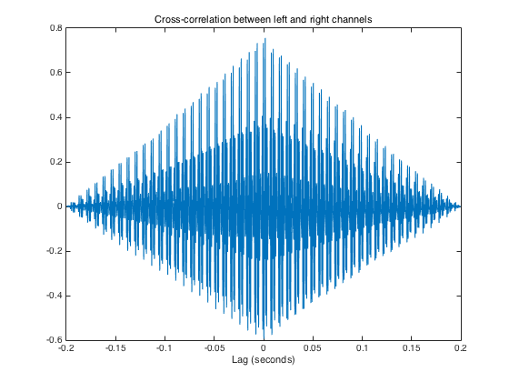
% Zoom view
xlim([-600 600]/fs)
Estimate delay (in seconds)
tau = lag_max / fs % Peak lag in seconds txt = sprintf('Estimated inter-microphone time delay = %.2f milliseconds', 1000*tau) hold on plot(tau, r12_max, 'ro') grid on
tau =
0.0017
txt =
Estimated inter-microphone time delay = 1.67 milliseconds

Do the signals roughly line up?
figure(1) clf plot(m/fs, v1, (m + lag_max)/fs, v2) title('Audio signal') xlabel('Time (seconds)') legend('x1(t)', 'x2(t-\tau)') zoom xon % Zoom view xlim(xlim1)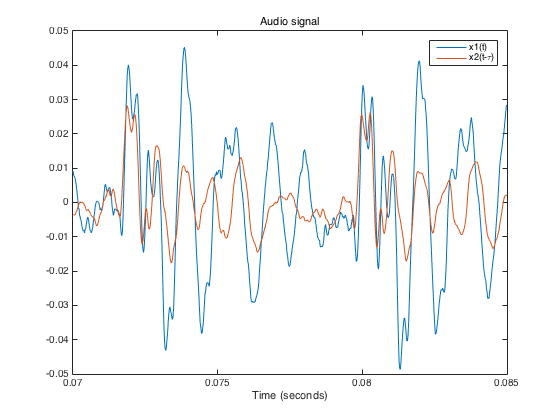
figure(1) clf subplot(3, 1, 1) plot(m/fs, v1, m/fs, v2) title('Audio signal') xlabel('Time (seconds)') legend('x1(t)', 'x2(t)') xlim(xlim1) subplot(3, 1, 2) plot(m/fs, v1, (m + lag_max)/fs, v2) xlim([0 T]) title('Audio signal') xlabel('Time (seconds)') legend('x1(t)', 'x2(t-\tau)') xlim(xlim1) subplot(3, 1, 3) plot((1-M:M-1)/fs*1000, r12, tau*1000, r12_max, 'ro') title('Cross-correlation between left and right channels') xlabel({'Lag (milliseconds)', txt}) grid on xlim([-4 4]) orient tall % print -dpdf demo_01_SHSHSHSH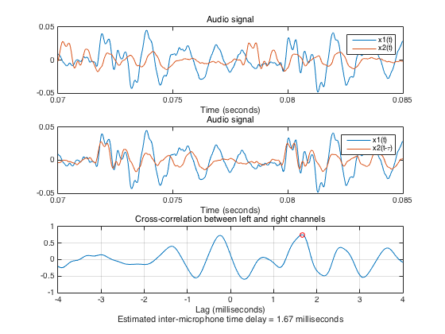
Estimate inter-microphone distance
% Speed of sound at sea level = 340.29 m/s sos = 340.29; % speed of sound (meters/second) dist = tau * sos; fprintf('Estimated inter-microphone distance = %.2f meters\n', dist)
Estimated inter-microphone distance = 0.57 meters